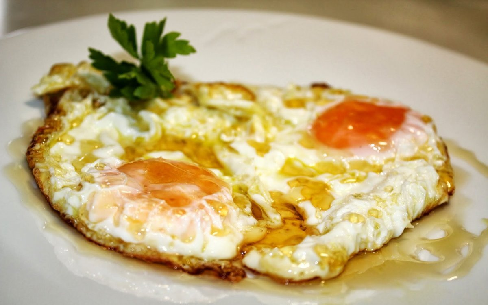
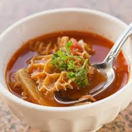
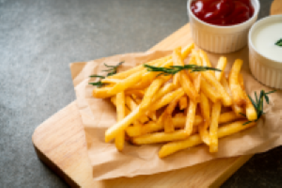

Elaborar nuestra propia receta de pizza casera fácil es un proceso mucho más sencillo de lo que creemos, solo necesitamos conocer los ingredientes para pizza necesarios y el proceso a seguir para integrarlos.
Para un huevo frito estándar, el aceite (siempre aceite de oliva) tiene que estar sobre una sartén antiadherente y con el fuego suave. El hecho de que esté a baja temperatura es fundamental si quieres que quede sin puntilla. Si por el contrario, te gusta con puntilla, el aceite debe estar algo más caliente.
Para hacer una buena hamburguesa, la elección de la carne que se usará es fundamental. Si selecciona un corte más magro, recuerde mezclarlo con otro con más grasa porque esta es importante para que su hamburguesa no quede dura y seca.
La sopa de mondongo se ha vuelto una tradición en los hogares hondureños. Generación tras generación los catrachos disfrutan cada domingo de este exquisito platillo. Esta sopa deleita hasta el más fino y exigente paladar del viajero o hondureño. El origen de esta receta genera controversia, principalmente por lo oscuro de su origen tanto gastronómico como etimológico

Para preparar las papas fritas: Pela las papas y córtalas en tiras finas. Trata que todas salgan parejas, más o menos del mismo tamaño. Pon todas las papas cortadas en un recipiente y cubre con agua para que eliminen el almidón. Repite un par de veces hasta que el agua salga limpia. Escurre las papas y seca bien con servilletas de papel.
| Comidas | Ingredientes | Descripción | Imágen |
|---|---|---|---|
| PIZZA CASERA | comida1 kilogramo de harina de fuerza 2 limones 2½ tazas de agua tibia 2 cucharadas soperas de aceite de oliva 30 gramos de levadura fresca |
Huevo que se introduce en un baño de fritura o en una sartén que contenga aceite, manteca de cerdo o grasa de oca muy caliente. La clara queda coagulada y se dora ligeramente y la yema no se cuece |  |
| HUEVO FRITO | comida1 HUEVO SAL ACEITE |
Huevo que se introduce en un baño de fritura o en una sartén que contenga aceite, manteca de cerdo o grasa de oca muy caliente. La clara queda coagulada y se dora ligeramente y la yema no se cuece |  |
| HAMBUERGUESA | PAN DURO 1KG CARNE PICADA CEBOLLA SALSAS |
emparedado que contiene carne picada o de origen vegetal | |
| MONDONGO | 1 libra de mondongo entero (500 g) 5 tazas de agua tibia (1250 ml) 2 limones (96 g) 1 cucharada de aceite (14 g) 1/2 de carne de cerdo cortada en cubos pequeños (250 g) 2 cebollas peladas,(30 g) 2 tomates rojos sin piel picados (236 g) |
embutido compuesto con la tripa grande del cerdo, carnero o vaca relleno de carne picada |  |
| PAPAS FRITAS | 4 papas amarillas grandes 2 tazas de aceite vegetal Sal, al gusto |
son un plato de patatas que se cocinan mediante fritura (en aceite o grasa caliente) hasta que queden doradas y crujientes |  |
esta pagina fue hecha por jamphier a bace de su cratividad